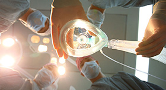

精密体检
PRECISE PHYSICAL EXAMINATION采用海外先进医疗技术，精确到全身各部位的精密检查，全面覆盖人体9 大系统多发病症，包括癌症、呼吸循环，神经，消化系统等
重大疾病以及高发慢性病，通过海外先进的技术手段和权威医生专业能力，及时排除您所有的担心和身体各个部位的隐患。
- 
尖端医疗技术
- 2013年世界卫生组织对各个国家医疗水平的排名中，日本排名第一，2013年盖洛普对全球敬业度调查中，日本排名第一。日本的服务质量也代表着全球最高水准。
低廉医疗费用
- 日本医疗费用在所有发达国家中是最低的，一般的重大疾病手术加治疗在500万日元左右，约合人民币30万元，只有美国的十分之一。

世界级防癌体系
- 日本近30年造就了世界领先的癌症防治体系，成功成为世界癌症防治最先的国家。在癌症诊断、治疗方面，尤其是早期癌症的发现，领跑于世界各国，它保持着发现癌症的世界记录—发现毫米级别以下的早初期癌症。

舒适就诊体验
- 优雅的就诊环境与国内拥挤的挂号大厅形成鲜明的对比，良好的医患关系和服务态度，都让您有种主人翁的感觉。

与中国相邻
- 地理位置最接近中国，文化上，饮食上都能最大限度的与我们融合。一方面减少了旅途中的劳累，另一方面大大的节省了长途飞行带来的昂贵费用，方便让患者及时接受治疗及亲朋好友的探望。

与中国相邻
- 地理位置最接近中国，文化上，饮食上都能最大限度的与我们融合。一方面减少了旅途中的劳累，另一方面大大的节省了长途飞行带来的昂贵费用，方便让患者及时接受治疗及亲朋好友的探望。